It took some work to get the data ready for Chapter 10 Terrain ruggedness. This chapter is a commentary on that work and some of the questions I asked and trade offs I made along the way. It’s also the chapter that generates the data needed for that chapter.
First, each chapter has a setup chunk that loads libraries and sets some constants (setup.R) and prepares the dam data (prepare-data-R). Below that are additional constants used in this chapter.
I use terrain ruggedness index (TRI) as my measure of roughness. The terra::terrain() function does this for me using digital elevation model (DEM) data I downloaded and saved in GeoTIFF files. It uses eight-neighbor “classic” TRI per Wilson et al. (2007).1. From the terra::terrain() help:
“TRI (Terrain Ruggedness Index) is the mean of the absolute differences between the value of a cell and its 8 surrounding cells.”].
See also the original paper defining TRI by Riley, DeGloia, and Elliot (1999)2 which is available for download from the Archives and Special Collections of Montana State University.
Terrain ruggedness can be measured at various resolutions, and at finer resolutions vegetation and human-built structures can add significant noise to elevation values. For example, at pixel resolution ~100 m they likely are noticeable whereas at pixel resolution ~1000 m, in any non-flat area, this noise is a much smaller component of the differences in elevation. In any case, over many points, the noise likely cancels out (I hope!).
11.1.2 Defining area around dam and calculating local roughness
I define a circle of radius r = 5 km around each dam location, get the elevation raster for each circle, and calculate the TRI for all points in the circle. Then I can use the data individually and aggregated by state, region, nidHeight, etc.
11.1.3 Defining an approach to compare local tri_mean at dams and random state locations
For each state in the continental USA:
Use (A) dam point locations; or (B) get state boundaries and randomly sample the same number points as dams within each state
Get the elevation raster for the circle around each point, at 5 km radius
Compute the TRI for the points in each circle
Compute summary stats (tri_mean_dam, tri_median_dam, tri_sd_dam, etc.) or (tri_mean_sample, tri_median_sample, tri_sd_sample, etc.) for each circle.
It seems likely that in some cases the circles will overlap. I think this is generally OK, because I am computing tri_mean for each circle, and every state has a lot of dams (and thus equivalent randomly sampled points).
Then I look at the distribution of means of the sample. I order tri_mean_dam and tri_mean_sample values from smallest to largest for each state, then join them in a data frame, and evaluate the models \[tri\_mean_{state} \sim tri\_mean_{dam} + \epsilon\]
as well as adjusting for state:
\[tri\_mean_{state} \sim tri\_mean_{dam} | state + \epsilon\] I do this in Chapter 10 Terrain ruggedness.
11.1.4 Selecting a resolution of the elevation data
Since the state is the basic aggregation unit, I need state boundaries (state_boundaries_sf), which are conveniently provided by USAboundaries::us_states(). And since I sample random points and get the elevation of the points in a circle 5 km radius from each sample point, I need state boundaries that are 5 km inside the actual state boundaries (state_boundaries_smaller_sf).
11.1.4.1 Resolution of elevation data varies by latitude
Issue: the geographical area included in an elevation raster at a constant zoom level varies by latitude, so to compare states fairly, for each state I could (1) hold the number of pixels constant and cover more area at high latitudes (the default behavior as seen in Figure 11.4); or (2) hold the area constant and sacrifice some data at the lower latitudes. In the initial implementation, I accept the default behavior and may reconsider this topic later if it seems meaningful to do so.
elevatr::get_elev_raster() help text includes the following re: zoom level:
The zoom ranges from 1 to 14 [or is it now 1..15; see Mapzen URL –Daniel]. Resolution of the resultant raster is determined by the zoom and latitude. For details on zoom and resolution see the documentation from Tilezen.
For latitudes in degrees, the Tilezen page offers this formula to determine meters per pixel:
Zoom = {7, 9} generates elevation rasters with a cell (a.k.a. pixel) resolution at three ranges of relevant latitudes (Table 11.1). Note that zoom level in elev_get_raster() is one off from the documentation.
Show the code
get_pixel_res <-function(lat, zoom) {cos(lat * pi/180) *2* pi *6378137/ (256*2^(zoom+1)) # 6378137 meters}mid_lat_nc <-mean(c(36.58812, 33.85111))latitudes <-c(49.4, mid_lat_nc, 24.5)zoom_level <-c(7, 9)comment =c("Northewest Angle Inlet, Lake of the Woods, MN", "Middle latitude of NC","Ballast Key, FL")res_df =tibble(res_zoom =c(map(7, \(x) get_pixel_res(latitudes, x)),map(9, \(x) get_pixel_res(latitudes, x)) ) |>unlist(),cmt =rep(comment, 2))tibble(latitude =rep(latitudes, times =2),zoom =c(rep(7, 3), rep(9, 3)),pixel_res_m = res_df$res_zoom,comment = res_df$cmt) |>group_by(zoom) |>mutate(pct = pixel_res_m /min(pixel_res_m)) |>gt() |>tab_header(md(glue("**Ground resolution per pixel at various latitudes**","<br>at zoom levels 7 and 9"))) |>tab_source_note(md(glue("*get_elev_raster() zoom level 9 seems to be equivalent to zoom level 10 in the docs"," at <https://github.com/tilezen/joerd/blob/master/docs/data-sources.md#what-is-the-ground-resolution>*"))) |>fmt_number(columns =c(latitude, pixel_res_m),decimals =1) |>fmt_percent(columns = pct,decimals =0)
Ground resolution per pixel at various latitudes at zoom levels 7 and 9
Since I’m interested in the local roughness around the dams, I use zoom level 9 data to get ~120 m resolution in elevation in the mid latitudes corresponding to the middle of North Carolina.
11.1.4.3 Data from elevatr::get_elev_raster() and its source
I get elevation data from elevatr::get_elev_raster() at zoom = 9, which returns SRTM3 data from Open Topography. Its digital elevation model (DEM) has a range over continental North America south of 60° N latitude. This range is fine, since the northernmost point in the continental USA is the Northwest Angle Inlet in Lake of the Woods, MN at 49.4°)4.
The Shuttle Radar Topography Mission (SRTM)’s Digital Elevation Model (DEM) is a Digital Surface Model (DSM) rather than a Digital Terrain Model (DTM). In other words, the radar reflections used to calculate elevations in some cases are from the tops of buildings and partway through the tree canopy; elevation values have not been adjusted to estimate ground level.5
11.2 Implementation
11.2.1 Getting state boundaries and elevations
Since I sample a lot of points, it’s worth downloading state elevation data and reusing it. It takes a while and some disk space. I save the TRI data for each state as a GeoTIFF file.
Show the code
state_boundaries_smaller_sf <- state_boundaries_sf |># shrink borders a little to make future sampling "safe"st_transform(crs_m) |># change to meter-based CRS to make the st_buffer(dist=) easierst_buffer(dist =-5000) |># 5 kmst_transform("NAD83") # change backnc_boundary <- state_boundaries_sf |>filter(state_abb =="NC")###### Get Blue Ridge Parkway multilinefname <-here("data/processed/blue-ridge-parkway.rds")if(!file.exists(fname)) { results <-st_bbox(nc_boundary) |>opq() %>%add_osm_feature(key ="name", value ="Blue Ridge Parkway") %>%osmdata_sf() parkway_lines <- results$osm_multilines |>st_transform("NAD83") parkway_lines_nc <-st_intersection(parkway_lines, nc_boundary)write_rds(parkway_lines_nc, fname)} else { parkway_lines_nc <-read_rds(fname)}
Show the code
# Note: this becomes more expensive in time and disk space for higher zoom levels###### Create elevation files for each stateif(!dir_exists(state_elevation_fname_root)) {dir_create(state_elevation_fname_root)}state_boundaries_for_elevation_sf <- state_boundaries_sf |>mutate(fname =paste0(state_elevation_fname_root, state_abb, ".tif"))for(i inseq_len(nrow(state_boundaries_for_elevation_sf))) {if(!file.exists(state_boundaries_for_elevation_sf$fname[i])) {###### get elevation data for each state and save each as separate GeoTIFF filefor(i inseq_len(nrow(state_boundaries_for_elevation_sf))) {if(!file.exists(state_boundaries_for_elevation_sf$fname[[i]])) { elev <-rast(get_elev_raster(locations = state_boundaries_for_elevation_sf |>filter(state_abb == state_boundaries_for_elevation_sf$state_abb[[i]]) |>st_buffer(dist =0.05), # ~5 km at lat of Pennsylvania # (to make sure we get all area in the state--can crop later)prj ="NAD83",z = my_zoom,clip ="locations",verbose ="FALSE") ) terra::writeRaster(x = elev,filename = state_boundaries_for_elevation_sf$fname[[i]],overwrite =TRUE,datatype ='INT2S' ) } } }}
If they didn’t already exist, I just created and saved elevation files for each state in ./data/processed/state-elevation-zoom9/ .
A plot of the elevation for North Carolina (Figure 11.1) shows I am on track.
ggplot() +geom_spatraster(data = nc_elevation,na.rm =TRUE) +geom_sf(data = nc_boundary,fill =NA,color ="darkgrey",linewidth =0.5,alpha =0.8,na.rm =TRUE) +scale_fill_cross_blended_c(trans ="sqrt") +guides(fill =guide_legend(position ="inside",reverse =TRUE)) +theme(legend.position.inside =c(0.3, 0.2),axis.title =element_blank(),axis.text =element_blank(),axis.ticks =element_blank() ) +labs(title ="North Carolina elevation",subtitle =glue("Elevation data via elevatr::get_elev_raster() with data from Mapzen Terrain Tiles"),caption = my_caption_opentopography,fill ="Elevation\n(meters)" )
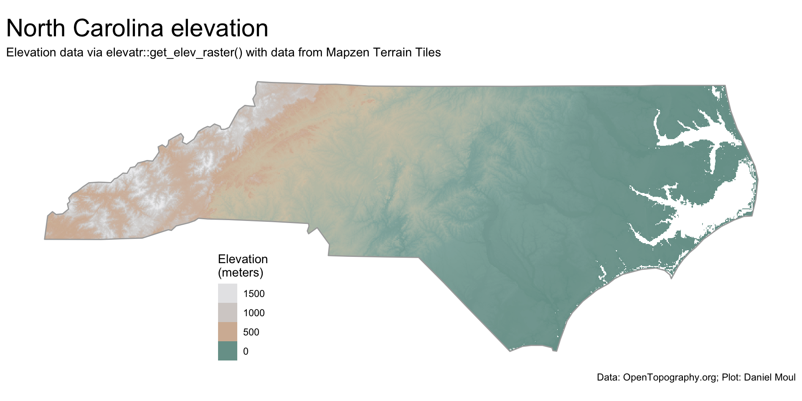
Figure 11.1: Elevation data - North Carolina
11.2.2 Local elevation data and TRI cacluations around dams
In this section I create TRI summary statistics for the circles around dams (if they don’t already exist), saving them in the file system. I use these TRI summary stat files below and in Chapter 10 Terrain ruggedness.
Show the code
if(!dir.exists(state_dam_tri_summary_pname)) {dir.create(state_dam_tri_summary_pname)}get_tri_values <-function(my_dam) {# input: sf with one dam (geometry is one POINT)# output: vector of TRI values (real numbers only)# TEST# my_dam <- dams |># select(nidId, state_abb, geom) |># filter(state_abb == "NC") |># head(1) crs_current <-st_crs(my_dam) circle_sf <- my_dam |>st_transform(crs_m) |># need projection in meters for st_buffer()st_buffer(dist =5000) |># meters (circle with diameter of 10 km)st_transform(crs_current) # back to usual projection circle_v <-vect(circle_sf) state_cropped <-crop(my_state, circle_v) # performance benefit before mask(); supplied by env outside get_tri_values() circle_elev <-mask(state_cropped, circle_v) circle_tri <-terrain(circle_elev,v ="TRI") circle_tri_values <-values(circle_tri) %>%subset(is.finite(.)) |>as.vector() circle_tri_values}states_with_dams <-sort(unique(dams$state_abb))for(i inseq_len(length(states_with_dams))) { state_dam_tri_summary_fname <-paste0(state_dam_tri_summary_pname, "/", states_with_dams[i], ".rds")if(!file.exists(state_dam_tri_summary_fname)) { dams_one_state <- dams |>filter(state_abb == states_with_dams[i]) |>select(nidId, state_abb, geom) my_state <-rast(paste0(state_elevation_fname_root, states_with_dams[i], ".tif")) tri =map(seq_len(nrow(dams_one_state)), ~get_tri_values(dams_one_state[.x, ]), get_tri_values) dams_one_state$tri <- tri dams_one_state_tri_summary <- dams_one_state |>st_drop_geometry() |>unnest(tri) |>reframe(tri_n =n(),tri_mean =mean(tri),tri_median =median(tri),tri_sd =sd(tri),.by =c(nidId, state_abb))write_rds(dams_one_state_tri_summary, state_dam_tri_summary_fname) } else {# do nothing (since file exists, go to next state) }}states_and_regions <-tibble(state_region = state.region,state_abb = state.abb) |>filter(state_abb %in% states_with_dams) |>mutate(n_states =n(),region_label =glue("{state_region} (n={n_states})"),.by = state_region)state_dam_tri_summary_df <-map(dir(state_dam_tri_summary_pname,full.names =TRUE), read_rds) |>bind_rows() |>left_join( states_and_regions,by ="state_abb" ) |>rename(tri_n_dam = tri_n,tri_mean_dam = tri_mean,tri_median_dam = tri_median,tri_sd_dam = tri_sd)dams_with_tri <- dams |>inner_join(state_dam_tri_summary_df |>select(-c(state_region:region_label)),by =join_by(nidId, state_abb)) |>filter(nidHeightId !="Undetermined")n_dams_with_tri <- state_dam_tri_summary_df |>nrow()
If they didn’t already exist, I just created and saved TRI summary statistics for local areas around dams for each state in ./data/processed/state-dam-tri-summary-zoom9 .
11.2.3 Local elevation data and TRI cacluations around random points
In this section (if they don’t already exist) I create TRI summary statistics for the circles around the same number of random points per state as there are dams, saving them in the file system. I use these TRI summary stat files below and in Chapter 10 Terrain ruggedness.
Show the code
# NOTE: this takes quite a while to run if the files don't exist in state_tri_circle_samples_pnameif(!dir.exists(state_tri_circle_samples_pname)) {dir.create(state_tri_circle_samples_pname)}get_state_tri_values <-function(my_point) {# input: sf with one point for one state (geometry is one POINT)# output: vector of TRI values (real numbers only)# TEST# my_point <- state_point_sample_sf# filter(state_abb == "NC") |># head(1) crs_current <-crs(my_point) circle_sf <- my_point |>st_transform(crs_m) |># need projection in meters for st_buffer()st_buffer(dist =5000) |># meters (circle with diameter of 10 km)st_transform(crs_current) # back to usual projection circle_v <-vect(circle_sf) my_state <-rast(paste0(state_elevation_fname_root, my_point$state_abb, ".tif")) state_cropped <-crop(my_state, circle_v) # performance benefit before mask() circle_elev <-mask(state_cropped, circle_v) circle_tri <-terrain(circle_elev,v ="TRI") circle_tri_values <-values(circle_tri) %>%subset(is.finite(.)) |>as.vector() circle_tri_values}####### Create the same number of random points as there are dams in the state# Get sample points for all states# Using a shrunken state boundary, sample the same number of points as there are dams in the stateset.seed(my_seed)n_samples_per_state_df <- dams_no_geo |>count(state_abb, name ="n_dams")state_point_sample_tmp <-tibble(state_abb ="")for(i inseq_len(nrow(n_samples_per_state_df))) { one_state <- n_samples_per_state_df[i, ] one_state_points_sample_df <- state_boundaries_smaller_sf |>filter(state_abb == one_state$state_abb) |>st_sample(one_state$n_dams) |>st_as_sf() |>mutate(state_abb = one_state$state_abb) state_point_sample_tmp <-bind_rows(state_point_sample_tmp, one_state_points_sample_df)}state_point_sample_sf <- state_point_sample_tmp |>filter(state_abb !="") |>rename(geometry = x) |>st_as_sf(crs ="NAD83") |>mutate(idx =row_number(),sample_id =paste0(state_abb, str_pad(idx, width =5, side ="left", pad ="0")),.by = state_abb)# TEST# plot(state_point_sample_sf)###### Get elevation filenamesls_state_elevation_files <-function(path = state_elevation_fname_root) {tibble(pname =dir_ls(path),fname =dir(path) ) |>mutate(state_abb =str_extract(fname, "[[:alpha:]]{2}")) |>select(pname, fname, state_abb) }state_elevation_files <-ls_state_elevation_files()###### Get TRI values around each sampled pointstates_with_points <-sort(unique(state_point_sample_sf$state_abb))for(i inseq_len(length(states_with_points))) { state_tri_circle_samples_fname <-paste0(state_tri_circle_samples_pname, "/", states_with_points[i], ".rds")if(!file.exists(state_tri_circle_samples_fname)) { points_one_state <- state_point_sample_sf |>filter(state_abb == states_with_points[i]) tri =map(seq_len(nrow(points_one_state)), \(x) get_state_tri_values(points_one_state[x, ])) points_one_state$tri <- tri points_one_state_tri_summary <- points_one_state |>st_drop_geometry() |>unnest(tri) |>reframe(tri_n =n(),tri_mean =mean(tri),tri_median =median(tri),tri_sd =sd(tri),.by =c(sample_id, state_abb) )write_rds(points_one_state_tri_summary, state_tri_circle_samples_fname) } else {# do nothing (since file exists, go to next state) }}
If they didn’t already exist, I just created and saved TRI summary statistics for local areas around random points in each state in ./data/processed/state-circle-tri-samples-zoom9 .
The maps below (Figure 11.2) show mean Terrain Ruggedness Index (TRI) (panel A) and standard deviation of the TRI (panel B) by state. Panel A is a good reminder that West Virginia is quite mountainous.
Show the code
dta_for_plot <-left_join(state_boundaries_sf, state_samples_tri_summary_df |>reframe(mean_tri_mean_sample =mean(tri_mean_sample),mean_tri_median_sample =mean(tri_median_sample),mean_tri_sd_sample =sd(tri_sd_sample),.by = state_abb ),by ="state_abb" ) |>select(state_abb, mean_tri_mean_sample, mean_tri_median_sample, mean_tri_sd_sample, geometry)p1 <- dta_for_plot |>ggplot() +geom_sf(aes(fill = mean_tri_mean_sample),color ="black",alpha =0.8) +scale_fill_gradient(low ="lightblue",high ="firebrick") +guides(fill =guide_legend(position ="inside",reverse =TRUE)) +theme(axis.text =element_blank(),axis.ticks =element_blank(),axis.title =element_blank(),legend.position.inside =c(0.9, 0.3)) +labs(subtitle ="A. Mean TRI. States with the largest proportion of the area being mountainous have highest mean TRI.",fill ="TRI mean" )p2 <- dta_for_plot |>ggplot() +geom_sf(aes(fill = mean_tri_sd_sample),color ="black",alpha =0.8) +scale_fill_gradient(low ="lightblue",high ="firebrick") +guides(fill =guide_legend(position ="inside",reverse =TRUE)) +theme(axis.text =element_blank(),axis.ticks =element_blank(),axis.title =element_blank(),legend.position.inside =c(0.9, 0.3)) +labs(subtitle ="B. TRI standard deviation. States with large areas that are flat and mountainous have highest standard deviation.",fill ="TRI\nstandard\ndeviation" )p1 / p2 +plot_annotation(title ="Terrain Ruggedness Index (TRI) by state",subtitle =glue("Calculated from elevation circles around randomly selected points in each state,"," matching the number of dams."),caption = my_caption_opentopography, )
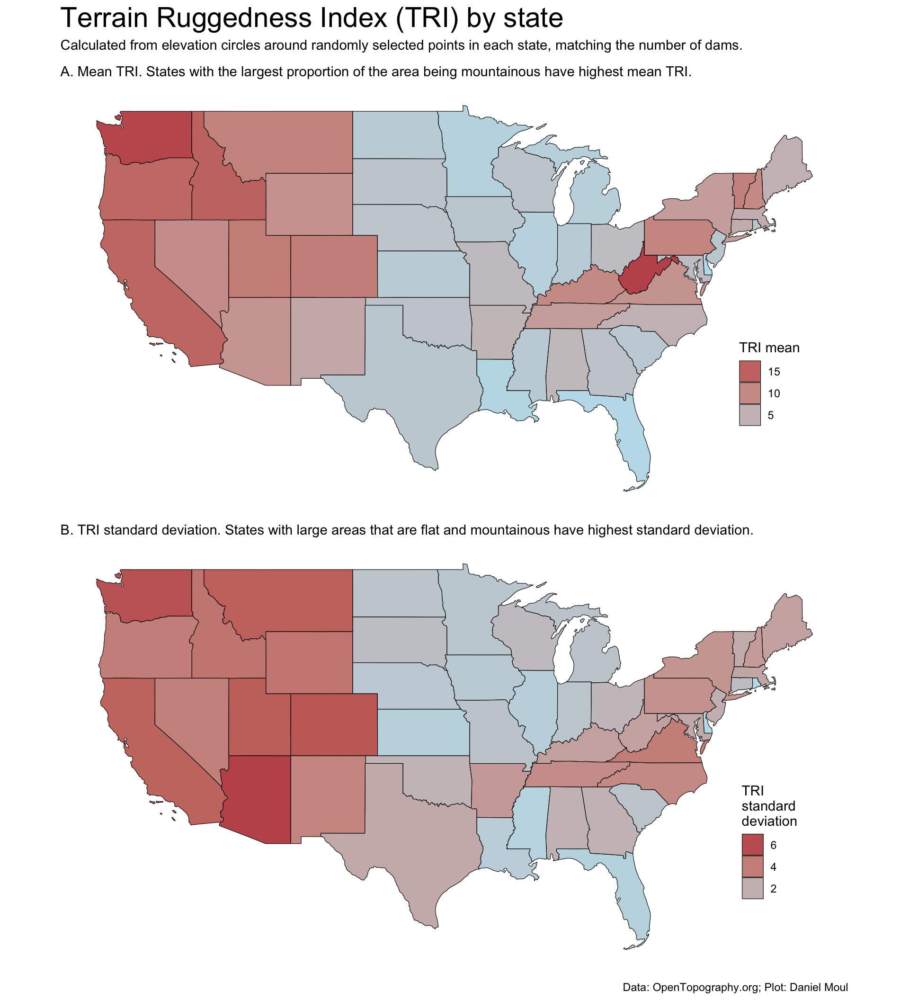
Figure 11.2: Mean Terrain Ruggedness Index (TRI) by state
Looking at the distribution of summary statistics values tri_median, tri_mean and tri_sd in Figure 11.3: their ECDF curves look quite similar, which makes sense given the definition of the terrain ruggedness index.
Show the code
state_samples_tri_summary_df |>pivot_longer(cols =starts_with("tri_"),names_to ="metric",values_to ="value") |>mutate(metric =factor(metric, levels =c("tri_median_sample", "tri_mean_sample", "tri_sd_sample", "tri_n_sample"))) |>ggplot() +stat_ecdf(aes(value)) +scale_x_continuous(expand =expansion(mult =c(0, 0.04))) +scale_y_continuous(labels =label_percent()) +facet_wrap(~metric, scales ="free_x") +labs(title ="Terrain Ruggedness Index (TRI) data - summary stats",subtitle =glue("ECDF of summary stats for states in the continental USA."," tri_n_sample is number of tri values in circle."),x =NULL,y ="Percent of samples",caption = my_caption_opentopography )
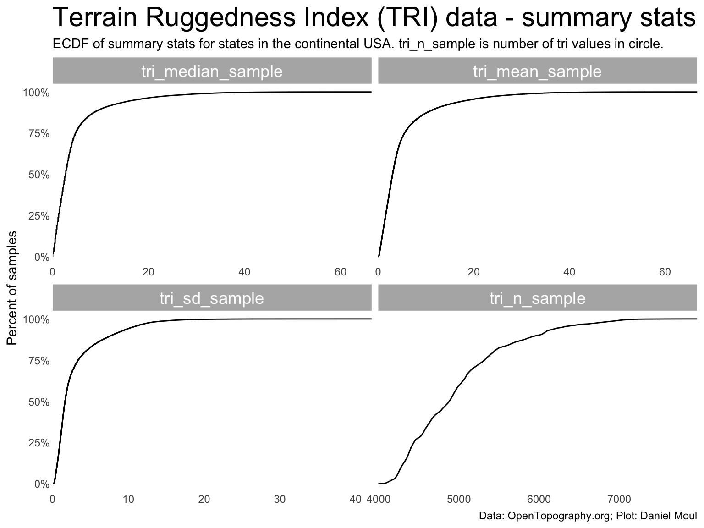
Figure 11.3: Terrain Ruggedness Index (TRI) data - summary stats
But why is there so much variation in the number of points in the samples (tri_n) in Figure 11.3?
Because the earth is roughly a sphere, and the resolution of points is higher as latitude increases (Figure 11.4). Each arc in the plot below is one or more states.
Show the code
dta_for_plot <-bind_cols( dams_with_tri |>select(nidId, tri_n_dam),st_coordinates(dams_with_tri, geometry)) |>clean_names()dta_for_plot |>ggplot() +geom_jitter(aes(tri_n_dam, y),size =0.25,alpha =0.25) +labs(title ="The number of points in cicles of same size\n centered on dams increases with latitude",subtitle ="Each arc is one or more state's circles.",x ="Number of points in circle",y ="Latitude",caption = my_caption_opentopography )
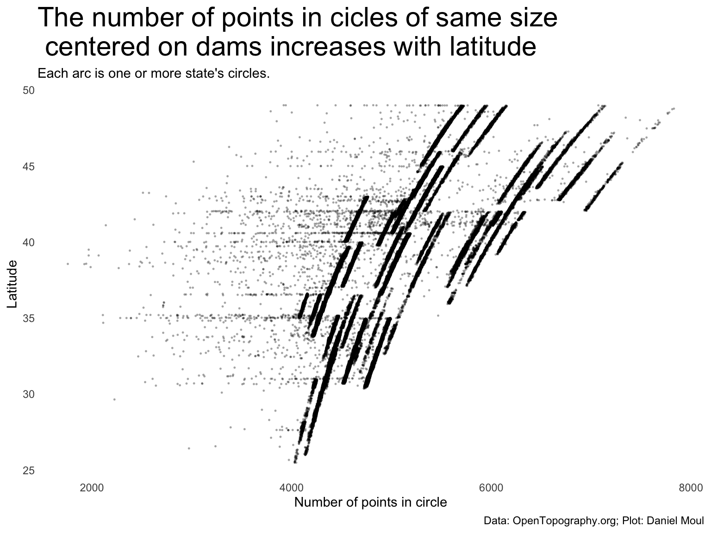
Figure 11.4: Effect of latitude on number of points in a circle of constant radius
tri_mean_sample values are strongly correlated with high tri_sd_sample standard deviations. That makes sense, given the definition of TRI.
Show the code
mod <-lm(tri_sd_sample ~ tri_mean_sample,data = state_samples_tri_summary_df)r2 <-glance(mod) |>select(adj.r.squared)mod_gam <- mgcv::gam(tri_sd_sample ~s(tri_mean_sample, bs ="cs"),data = state_samples_tri_summary_df)r2_gam <-glance(mod_gam) |>select(adj.r.squared)state_samples_tri_summary_df |>ggplot(aes(tri_mean_sample, tri_sd_sample)) +geom_point(size =0.25,alpha =0.5) +geom_smooth(method ="lm", formula ='y ~ x',se =FALSE) +geom_smooth(method ='gam',formula = y ~s(x, bs ="cs"),se =FALSE,color ="firebrick") +annotate("text", x =I(0.1), y =I(0.9),label =glue("Adjusted R2 = {round(r2, digits = 2)} (straight line)"),hjust =0,color ="blue") +annotate("text", x =I(0.1), y =I(0.85),label =glue("Adjusted R2 = {round(r2_gam, digits = 2)} (spline)"),hjust =0,color ="firebrick") +scale_x_continuous(expand =expansion(mult =c(0, 0.04))) +labs(title ="State samples with high mean TRI also have\nhigh standard deviation",subtitle =glue("Continental US states"),caption = my_caption_opentopography )
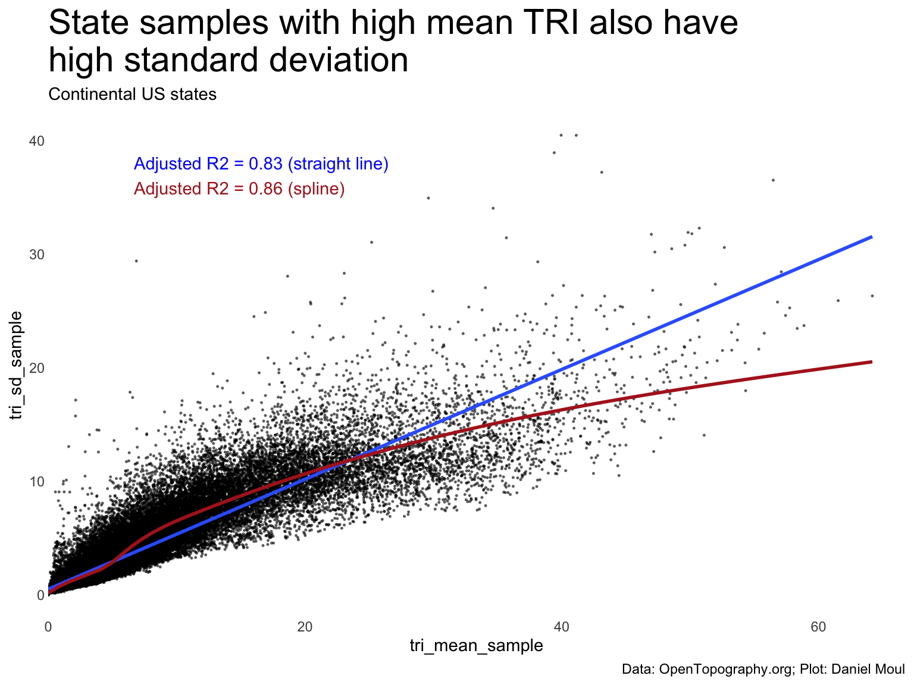
Figure 11.5: Terrain Ruggedness Index (TRI) std dev by mean
11.3 TRI in North Carolina
11.3.1 Relationship between tri_meandam and nidHeight in local areas around dams in NC
Using TRI threshold values I selected through manual inspection of maps…
Show the code
threshold_coastal =1.5threshold_piedmont =8nc_dams_with_tri <- dams |>inner_join(state_dam_tri_summary_df,by =join_by(nidId, state_abb)) |>filter(state_abb =="NC", nidHeightId !="Undetermined") |>mutate(est_region =case_when( tri_mean_dam < threshold_coastal ~"3. Coastal", tri_mean_dam < threshold_piedmont ~"2. Piedmont",.default ="1. Mountains" ))nc_n_dams_with_tri =nrow(nc_dams_with_tri)p1 <- nc_dams_with_tri |>ggplot() +stat_ecdf(aes(tri_mean_dam),geom ="line",linewidth =0.5,alpha =0.5,pad =FALSE ) +geom_vline(xintercept =c(threshold_coastal, threshold_piedmont),lty =2,linewidth =0.25,alpha =0.5 ) +scale_y_continuous(labels =label_percent()) +labs(subtitle ="A. Mean values",y ="Percent of dams" )p2 <- nc_dams_with_tri |>ggplot() +stat_ecdf(aes(tri_median_dam),geom ="line",linewidth =0.5,alpha =0.5,pad =FALSE ) +geom_vline(xintercept =c(threshold_coastal, threshold_piedmont),lty =2,linewidth =0.25,alpha =0.5 ) +scale_y_continuous(labels =label_percent()) +labs(subtitle ="B. Median values",y ="Percent of dams" )p3a <- nc_dams_with_tri |>ggplot(aes(tri_mean_dam, tri_sd_dam,color = est_region)) +geom_point(size =0.5,alpha =0.5 ) +geom_smooth(method ='gam', formula = y ~s(x, bs ="cs"),se =FALSE,color ="white",linewidth =1.5) +geom_smooth(method ='gam', formula = y ~s(x, bs ="cs"),se =FALSE,color ="grey40") +scale_color_manual(values =c("firebrick", "darkslategrey", "blue")) +# guides(color = guide_legend(override.aes = list(size = 3))) +guides(color ="none") +labs(subtitle ="C: Std dev by mean",color ="Predicted\nNC region" )p3b <- nc_dams_with_tri |>ggplot(aes(tri_mean_dam, tri_sd_dam,color = est_region)) +geom_point(size =0.5,alpha =0.5 ) +geom_smooth(method ='gam', formula = y ~s(x, bs ="cs"),se =FALSE,color ="white",linewidth =1.5) +geom_smooth(method ='gam', formula = y ~s(x, bs ="cs"),se =FALSE) +scale_color_manual(values =c("firebrick", "darkslategrey", "blue")) +guides(color ="none") +facet_wrap(~est_region, scales ="free") +labs(subtitle ="D: Std dev by mean (X and Y axis scale varies)",color ="Predicted\nNC region" )(p1 + p2 + p3a) / p3b +plot_annotation(title ="TRI summary stats in areas around dams in NC",subtitle =glue("{nc_n_dams_with_tri} circles with radius of 5 km."," tri_mean<sub>dam</sub> thresholds: mountain > {threshold_piedmont}; piedmont; {threshold_coastal} > coastal."),caption = my_caption_opentopography ) &theme(plot.title =element_textbox_simple(),plot.subtitle =element_textbox_simple())
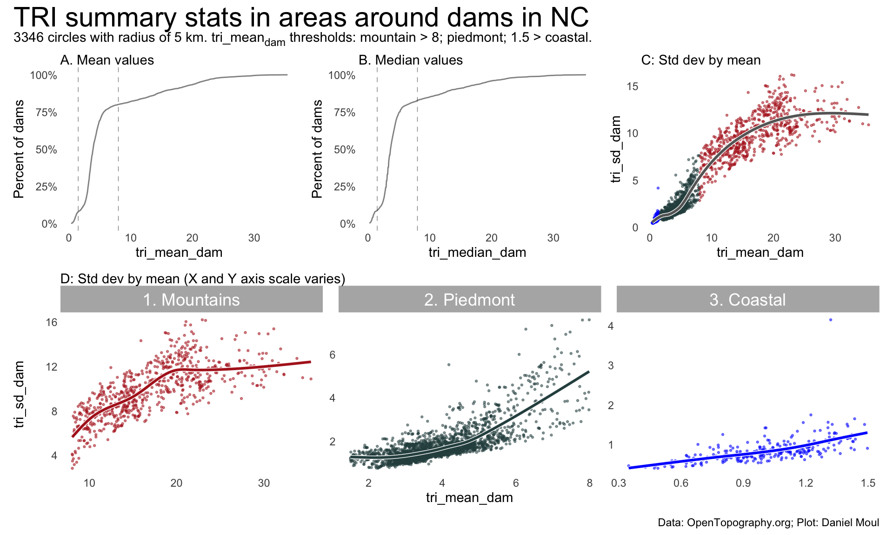
Figure 11.6: TRI summary stats in areas around dams in NC
Show the code
pA1 <- nc_dams_with_tri |>ggplot(aes(nidHeight, tri_mean_dam,color = nidHeightId)) +geom_point(size =0.5,alpha =0.5 ) +geom_smooth(method ='gam', formula = y ~s(x, bs ="cs"),se =FALSE,color ="white",linewidth =1.5) +geom_smooth(method ='gam', formula = y ~s(x, bs ="cs"),se =FALSE,color ="grey40") +scale_color_manual(values =c("firebrick", "darkslategrey", "blue", "skyblue")) +guides(color ="none") +labs(subtitle ="A: tri_mean<sub>dam</sub> by nidHeight<br>" )pB <- nc_dams_with_tri |>ggplot() +stat_ecdf(aes(tri_mean_dam, color = nidHeightId),geom ="line",linewidth =0.5,alpha =0.75,pad =FALSE ) +scale_y_continuous(labels =label_percent()) +scale_color_manual(values =c("firebrick", "darkslategrey", "blue", "skyblue")) +guides(color ="none") +labs(subtitle ="B. tri_mean<sub>dam</sub> ECDF by nidHeightID<br>",y ="Percent of dams" )pC <- nc_dams_with_tri |>ggplot(aes(nidHeight, tri_mean_dam,color = nidHeightId)) +geom_point(size =0.5,alpha =0.5 ) +geom_smooth(method ='gam', formula = y ~s(x, bs ="cs"),se =FALSE,color ="white",linewidth =1.5) +geom_smooth(method ='gam', formula = y ~s(x, bs ="cs"),se =FALSE) +scale_color_manual(values =c("firebrick", "darkslategrey", "blue", "skyblue")) +guides(color ="none") +facet_wrap(~nidHeightId, scales ="free") +labs(subtitle ="C: tri_mean<sub>dam</sub> by nidHeight (X and Y axis scale varies)<br>" )my_layout <-c("AACCBBCC")(pA1 / pB) + pC +plot_annotation(title =glue("There is a weak, non-linear relationship between nidHeight\nand tri_mean<sub>dam</sub>", " in local area around dams in NC"),subtitle =glue("{nc_n_dams_with_tri} circles with radius of 5 km."),caption = my_caption_opentopography ) +plot_layout(design = my_layout) &theme(plot.title =element_textbox_simple(),plot.subtitle =element_textbox_simple())
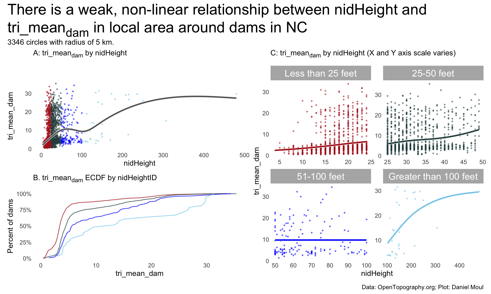
Figure 11.7: Local areas around North Carolina dams: TRI summary stats - by nidHeight
11.3.2 Predicting NC regions from TRI values
Terrain ruggedness index (TRI) is a useful way to predict the three main geographical land regions in North Carolina: the Blue Ridge mountains in the west, the rolling hills of the Piedmont in the middle, and the coastal plain in the east.
Show the code
# ###### NC TRI spatRaster and values as data.framenc_tri <-terrain(x = nc_elevation,v ="TRI")nc_tri[nc_tri >150] <-NA# remove four outliersnc_tri_values <-values(nc_tri) %>%subset(is.finite(.)) |>data.frame()
I use TRI values for the whole state: 7,636,743 points.
In Figure 11.8 and other plots below, the red line below is the Blue Ridge Parkway, which in the northern half of NC, runs along the top edge of the Blue Ridge escarpment.
Show the code
p1 <-ggplot() +geom_spatraster(data = nc_elevation,na.rm =TRUE) +geom_sf(data = parkway_lines_nc,color ="firebrick",linewidth =0.05 ) +geom_sf(data = nc_boundary,fill =NA,color ="grey50",linewidth =0.5,alpha =0.8,na.rm =TRUE) +scale_fill_cross_blended_c(trans ="sqrt") +guides(fill =guide_legend(position ="inside",reverse =TRUE)) +theme(legend.position.inside =c(0.3, 0.2),axis.title =element_blank(),axis.text =element_blank(),axis.ticks =element_blank() ) +labs(subtitle ="North Carolina elevation",fill ="Elevation\n(meters)" )p2 <-ggplot() +geom_spatraster(data = nc_tri,na.rm =TRUE) +geom_sf(data = parkway_lines_nc,color ="firebrick",linewidth =0.05 ) +geom_sf(data = nc_boundary,fill =NA,color ="grey50",linewidth =0.5,alpha =0.8,na.rm =TRUE) +scale_fill_cross_blended_c(trans ="sqrt") +guides(fill =guide_legend(position ="inside",reverse =TRUE)) +theme(legend.position.inside =c(0.3, 0.2),axis.title =element_blank(),axis.text =element_blank(),axis.ticks =element_blank() ) +labs(subtitle =glue("North Carolina terrain ruggedness (TRI)"),fill ="TRI" )p1 / p2 +plot_annotation(title ="NC elevation and ruggedness",subtitle =glue("Red line is the Blue Ridge Parkway. In the north half of the state,", "\nit mostly runs along the top of the Blue Ridge escarpment."),caption = my_caption_opentopography )
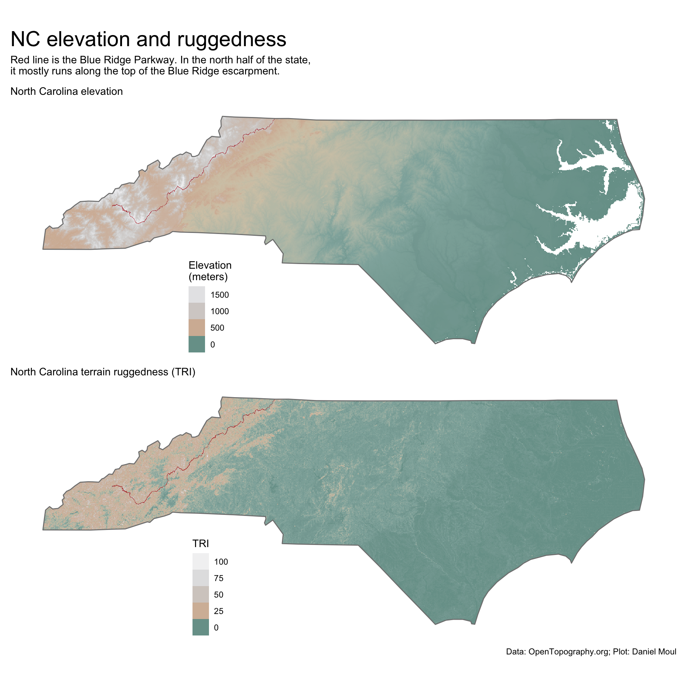
Figure 11.8: Ruggedness - North Carolina
Show the code
range_nc_tri <-c(0, max(values(nc_tri), na.rm =TRUE))nc_tri2 <- nc_trinc_tri2[ nc_tri2 < threshold_coastal ] <-NAnc_tri2[ nc_tri2 > threshold_piedmont ] <-NAthreshold_coastal_elevation_ft <-300# metersthreshold_piedmont_elevation_ft <-1500# metersp1 <-ggplot() +geom_spatraster(data = nc_tri2,na.rm =TRUE) +geom_sf(data = parkway_lines_nc,color ="firebrick",linewidth =0.05 ) +geom_sf(data = nc_boundary,fill =NA,color ="darkblue",linewidth =0.5,alpha =0.8,na.rm =TRUE) +scale_fill_cross_blended_c(trans ="sqrt",limits = range_nc_tri ) +guides(fill ="none") +theme(legend.position.inside =c(0.3, 0.2),axis.title =element_blank(),axis.text =element_blank(),axis.ticks =element_blank() ) +labs(subtitle =glue("A. Large green area is the Piedmont."," TRI: Coastal plain < {threshold_coastal}; Piedmont; < {threshold_piedmont} Mountains"), fill ="TRI" )range_nc_elevation <-c(0, max(values(nc_elevation, na.rm =TRUE)))nc_elevation2 <- nc_elevationnc_elevation2[ nc_elevation2$elevation < threshold_coastal_elevation_ft *0.3048 ] <-NA# < 300 ft is coastalnc_elevation2[ nc_elevation2$elevation > threshold_piedmont_elevation_ft *0.3048 ] <-NA# > 1500 ft is mountainp2 <-ggplot() +geom_spatraster(data = nc_elevation2,na.rm =TRUE) +geom_sf(data = parkway_lines_nc,color ="firebrick",linewidth =0.05 ) +geom_sf(data = nc_boundary,fill =NA,color ="darkblue",linewidth =0.5,alpha =0.8,na.rm =TRUE) +scale_fill_cross_blended_c(trans ="sqrt",limits = range_nc_elevation) +guides(fill =guide_legend(position ="inside",reverse =TRUE, )) +theme(legend.position.inside =c(0.3, 0.2),axis.title =element_blank(),axis.text =element_blank(),axis.ticks =element_blank() ) +labs(subtitle =glue("B. NC region defined by elevation."," Coastal plain < {threshold_coastal_elevation_ft} ft ({round(threshold_coastal_elevation_ft * 0.3048)} m)", "; Piedmont; {threshold_piedmont_elevation_ft} ft ({round(threshold_piedmont_elevation_ft * 0.3048)} m) < Mountains","\nSource: www.ncpedia.org/geography/region/piedmont"),fill ="Elevation\n(meters)" )p1 / p2 +plot_annotation(# title = glue("Ruggedness values (panel A) do as well defining",# "\nNorth Carolina regions (mountains, Piedmont, and coastal plain) ",# "\nas commonly accepted elevations (panel B)",# ),title =glue("Ruggedness (panel A) does as well as elevation (panel B) in defining","\nNorth Carolina regions (mountains, Piedmont, and coastal plain).", ),caption = my_caption_nid_opentopography )
Figure 11.9: Ruggedness (panel A) does as well as elevation (panel B) in defining North Carolina regions (mountains, Piedmont, and coastal plain)
11.3.3 Predicting dams’ NC region from tri_meandam
The NC region in which dams (25+ ft high) are placed can be predicted from \(tri\_mean_{dam}\) (Figure 11.10).
Show the code
ggplot() +geom_spatraster(data = nc_elevation,na.rm =TRUE,show.legend =FALSE) +geom_sf(data = nc_boundary,fill =NA,color ="grey50",linewidth =0.5,alpha =0.8,na.rm =TRUE) +geom_sf(data = nc_dams_with_tri |>filter(nidHeight >=25),aes(color = est_region),size =0.35) +scale_fill_cross_blended_c(trans ="sqrt") +scale_color_manual(values =c("firebrick", "darkslategrey", "blue")) +guides(fill =guide_legend(position ="inside",reverse =TRUE,override.aes =list(size =3) )) +guides(color =guide_legend(position ="inside",reverse =FALSE,override.aes =list(size =3) )) +theme(legend.position.inside =c(0.3, 0.2),axis.title =element_blank(),axis.text =element_blank(),axis.ticks =element_blank() ) +labs(title ="North Carolina elevation with dams (excluding small dams)",subtitle =glue("Includes dams with nidHeight >= 25 ft. Mean TRI calculated from circle around dam with radius 5 km.","\nResolution of points in TRI caculation ~120 m.", " TRI thresholds: mountain > {threshold_piedmont}; piedmont; {threshold_coastal} > coastal."), caption = my_caption_nid_opentopography,fill ="Elevation\n(meters)",color ="Dam's region predicted\nfrom mean TRI" )
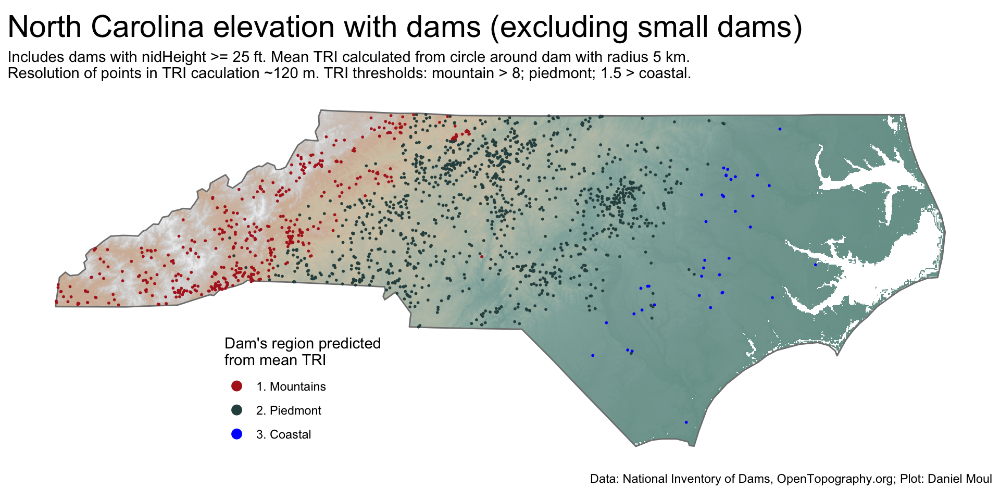
Figure 11.10: Ruggedness - North Carolina
The NC region in which small dams (less than 25 ft high) are placed can be predicted from \(tri\_mean_{dam}\) too–but not as accurately (Figure 11.11).
Show the code
ggplot() +geom_spatraster(data = nc_elevation,na.rm =TRUE,show.legend =FALSE) +geom_sf(data = nc_boundary,fill =NA,color ="grey50",linewidth =0.5,alpha =0.8,na.rm =TRUE) +geom_sf(data = nc_dams_with_tri |>filter(nidHeight <25),aes(color = est_region),size =0.35) +scale_fill_cross_blended_c(trans ="sqrt") +scale_color_manual(values =c("firebrick", "darkslategrey", "blue")) +guides(fill =guide_legend(position ="inside",reverse =TRUE,override.aes =list(size =3) )) +guides(color =guide_legend(position ="inside",reverse =FALSE,override.aes =list(size =3) )) +theme(legend.position.inside =c(0.3, 0.2),axis.title =element_blank(),axis.text =element_blank(),axis.ticks =element_blank() ) +labs(title ="North Carolina elevation with dams (small dams only)",subtitle =glue("Includes dams with nidHeight < 25 ft. Mean TRI calculated from circle around dam with radius 5 km.","\nResolution of points in TRI caculation ~120 m.", " TRI thresholds: mountain > {threshold_piedmont}; piedmont; {threshold_coastal} > coastal."), caption = my_caption_nid_opentopography,fill ="Elevation\n(meters)",color ="Dam's region predicted\nfrom mean TRI" )
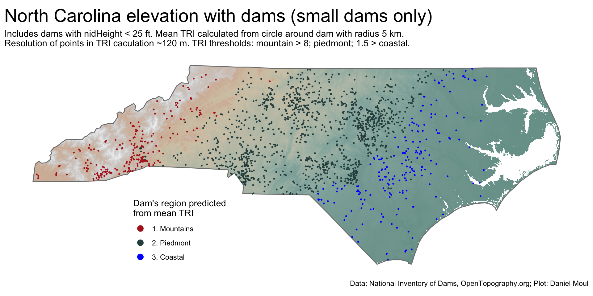
Figure 11.11: Ruggedness - North Carolina
11.3.4 Comparing TRI and elevation prediction heuristics
The two heuristics for predicting region generally agree: (1) TRI thresholds and (2) elevation thresholds.
Prediction methods mostly agree Using (1) TRI and (2) elevation heuristics Dams in North Carolina
nidHeightId
n_agree
n_rows
pct_agree
Less than 25 feet
1360
1721
79.0%
51-100 feet
114
145
78.6%
25-50 feet
1223
1447
84.5%
Greater than 100 feet
27
33
81.8%
Total
2724
3346
81.4%
Table 11.2: Prediction methods mostly agree
11.3.5 Optimizing agreement between the two prediction methods
Can I find better TRI threshold values to maximize the agreement with elevation in estimating NC region? Yes, using a grid search to vary coast_val and pied_val threshold values.
Figure 11.12: Grid search for best TRI thresholds that match the elevation heuristic for predicting NC region
Compared to the results using original TRI threshold values (Table 11.2), agreement of NC region predictions for small dams improved 6 percent while agreement for the largest dams (fewer in number) declined 6 percent.
Prediction methods mostly agree Using (1) optimal TRI thresholds and (2) elevation heuristics Dams in North Carolina
nidHeightId
n_agree
n_rows
pct_agree
Less than 25 feet
1456
1721
84.6%
51-100 feet
117
145
80.7%
25-50 feet
1261
1447
87.1%
Greater than 100 feet
25
33
75.8%
Total
2859
3346
85.4%
Table 11.3: Prediction methods mostly agree sing (1) optimal TRI thresholds and (2) elevation heuristics
Show the code
range_nc_tri <-c(0, max(values(nc_tri), na.rm =TRUE))nc_tri3 <- nc_trinc_tri3[ nc_tri3 < optimal_tri_params$coast_val ] <-NAnc_tri3[ nc_tri3 > optimal_tri_params$pied_val ] <-NAthreshold_coastal_elevation_ft <-300# metersthreshold_piedmont_elevation_ft <-1500# metersp1 <-ggplot() +geom_spatraster(data = nc_tri3,na.rm =TRUE) +geom_sf(data = parkway_lines_nc,color ="firebrick",linewidth =0.05 ) +geom_sf(data = nc_boundary,fill =NA,color ="grey50",linewidth =0.5,na.rm =TRUE) +scale_fill_cross_blended_c(trans ="sqrt",limits = range_nc_tri ) +guides(fill ="none") +theme(legend.position.inside =c(0.3, 0.2),axis.title =element_blank(),axis.text =element_blank(),axis.ticks =element_blank() ) +labs(subtitle =glue("A. Large green area is the predicted Piedmont"," with optimal TRI: Coastal plain < {optimal_tri_params$coast_val}; Piedmont;", " <= {optimal_tri_params$pied_val} Mountains","\nMatching elevation heuristic with {percent(optimal_tri_params$pct_agree, accuracy = 0.01)}", " agreement in predicted region"), fill ="TRI" )range_nc_elevation <-c(0, max(values(nc_elevation, na.rm =TRUE)))nc_elevation2 <- nc_elevationnc_elevation2[ nc_elevation2$elevation < threshold_coastal_elevation_ft *0.3048 ] <-NA# < 300 ft is coastalnc_elevation2[ nc_elevation2$elevation > threshold_piedmont_elevation_ft *0.3048 ] <-NA# > 1500 ft is mountainp2 <-ggplot() +geom_spatraster(data = nc_elevation2,na.rm =TRUE) +geom_sf(data = parkway_lines_nc,color ="firebrick",linewidth =0.05 ) +geom_sf(data = nc_boundary,fill =NA,color ="grey50",linewidth =0.5,na.rm =TRUE) +scale_fill_cross_blended_c(trans ="sqrt",limits = range_nc_elevation) +guides(fill =guide_legend(position ="inside",reverse =TRUE, )) +theme(legend.position.inside =c(0.3, 0.2),axis.title =element_blank(),axis.text =element_blank(),axis.ticks =element_blank() ) +labs(subtitle =glue("B. NC region defined by elevation."," Coastal plain < {threshold_coastal_elevation_ft} ft ({round(threshold_coastal_elevation_ft * 0.3048)} m)", "; Piedmont; {threshold_piedmont_elevation_ft} ft ({round(threshold_piedmont_elevation_ft * 0.3048)} m) < Mountains","\nSource: www.ncpedia.org/geography/region/piedmont"),fill ="Elevation\n(meters)" )p1 / p2 +plot_annotation(# title = glue("Using optimal TRI thresholds predicting NC regions (panel A)",# "\ndoes as well as commonly accepted elevations (panel B)"# ),title =glue("Optimal TRI thresholds (panel A) do as well as elevation (panel B)","\nin defining NC regions (mountains, Piedmont, and coastal plain).", ),caption = my_caption_nid_opentopography )
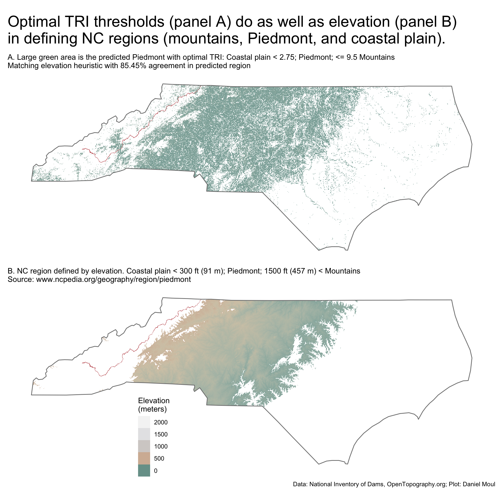
Figure 11.13: Optimal TRI thresholds (panel A) do as well as elevations (panel B) in defining Carolina regions (mountains, Piedmont, and coastal plain).
Combining the intersection and disjoint set of original (Figure 11.9) and optimal (Figure 11.13) plots thresholds into one plot (Figure 11.14): the optimal thresholds remove a lot of points around rivers in the coastal plain–and unfortunately, also flat spots in the Piedmont.
I prefer the visual look in the original Figure 11.9, because (1) it’s interesting to see the shapes of the rivers in the coastal plain (one is not tempted to think the Piedmont extends into the coastal plain along the rivers); and (2) there are fewer white “holes” in the Piedmont.
Show the code
# TODO: can I do better?# So far I can plot results of intersect() which are {TRUE, FALSE, NA} values# I'd rather have two plots, one for TRUE and one for FALSE and in both cases plot the TRI values rather than TRUE/FALSE# Perhaps use terra::segregate(), thresh(), or divide()?# TODO: change fig.height to 10 or 11 if plotting 2 NC mapsrange_nc_tri <-c(0, max(values(nc_tri), na.rm =TRUE))nc_tri4 <-c(nc_tri2 |>rename(TRI2 = TRI), nc_tri3 |>rename(TRI3 = TRI) )nc_tri4$intersect <-intersect(nc_tri2, nc_tri3)nc_tri4[is.na(nc_tri4$intersect)] <-NAp1 <-ggplot() +geom_spatraster(data = nc_tri4[["intersect"]],alpha =0.7) +geom_sf(data = parkway_lines_nc,color ="firebrick",linewidth =0.05 ) +geom_sf(data = nc_boundary,fill =NA,color ="grey50",linewidth =0.5,# alpha = 0.8,na.rm =TRUE) +scale_fill_gradient(low ="gold",high ="darkgreen",na.value ="white",breaks =c(0, 1)) +guides(fill =guide_legend(position ="inside",reverse =TRUE, )) +theme(legend.position.inside =c(0.3, 0.2),axis.title =element_blank(),axis.text =element_blank(),axis.ticks =element_blank() ) +labs(subtitle =glue("NC Piedmont region predicted by both TRI threshold sets (1) and only one set (0)."),fill ="TRI" )p1 +plot_annotation(title =glue("Prediction of land as 'Piedmont' using original\nand optimized TRI threshold sets"),caption = my_caption_nid_opentopography )
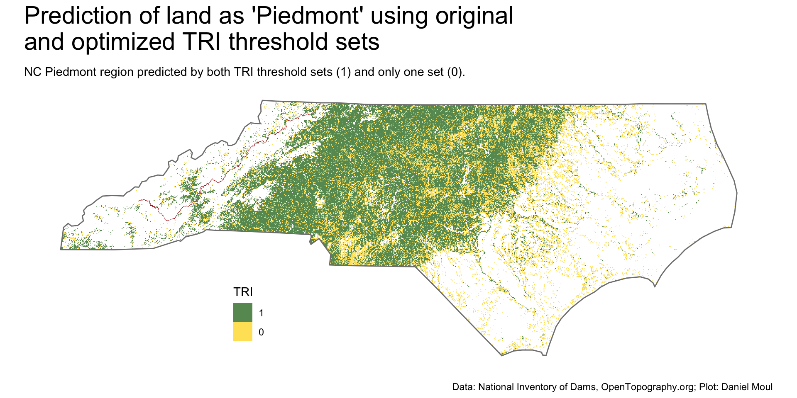
Figure 11.14: Comparing the predicted region using original and optimal sets of ruggedness (TRI) thresholds in North Carolina
Wilson et al 2007, Multiscale Terrain Analysis of Multibeam Bathymetry Data for Habitat Mapping on the Continental Slope. Marine Geodesy 30:3-35.↩︎